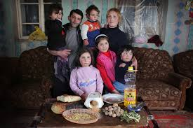
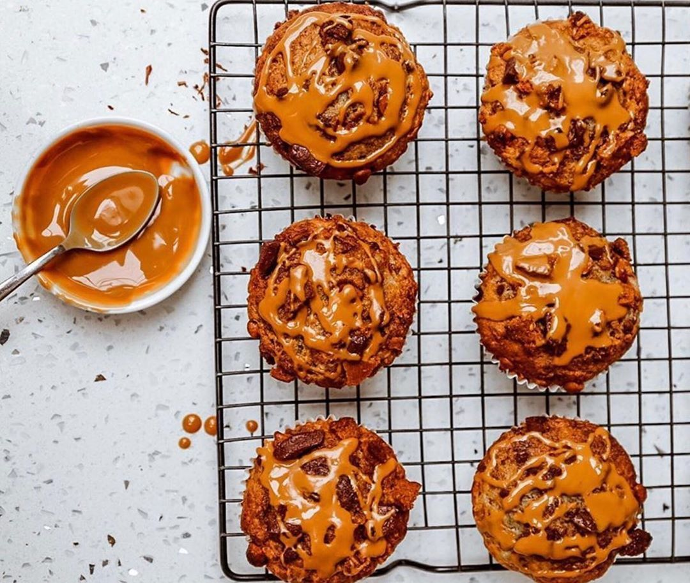
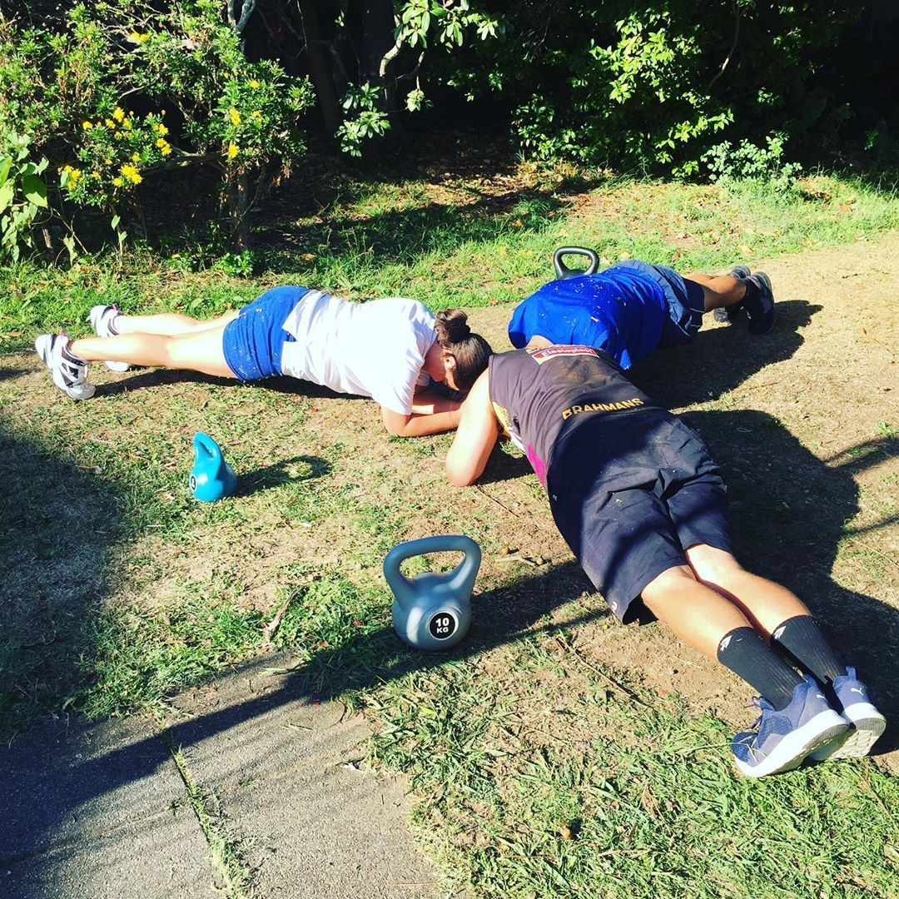

1. Eat Around The Table With Family Members
It can gain me more happier. The chart shown that the more often parents have meals with their children around a table, the happier the children were. The number of times children have meals with their parents around a table is actually a very significant determinant of the student’s sense of belonging, leading to an increased level of happiness. This MCO is a fabulous opportunity for families to bond together over meals. Some of my friends who don’t cook at home, now they are starting to cook. And whether the food tastes good or bad, it doesn’t matter, as long as you are doing this together as a family.
2. Practice Tolerance
tolerance goes both ways – people who’s happier are more tolerant, and when you are more tolerant, you tend to be happier because you have better relationships with people around you. It will give us contact with people and make a good relationship. This would make the family members are easy to make friends with me.
3. Exercise Together
“To have good mental health, you need to first have good physical health,”. There are plenty of online workout videos on YouTube and Facebook in this MCO season. As 3.6 billion people globally continue to stay at home, many big brands, small businesses, and personal trainers are holding Instagram and Facebook live workout sessions to gather their consumers and audiences online.
  